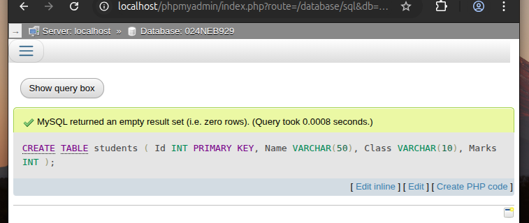
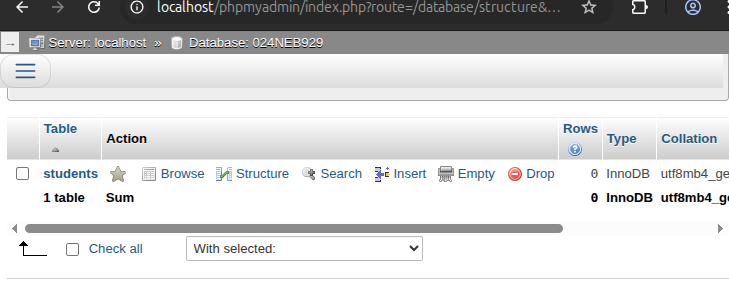
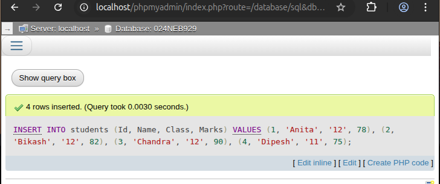
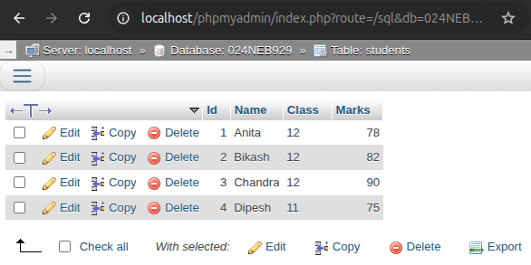
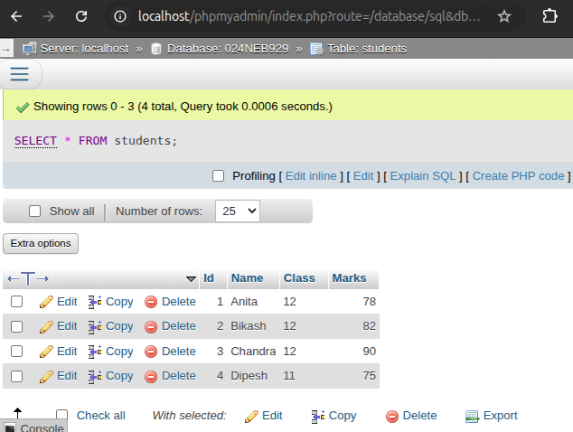
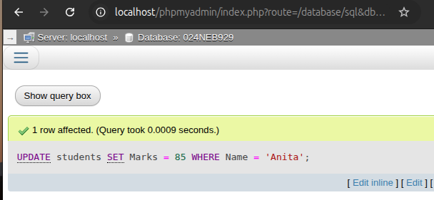
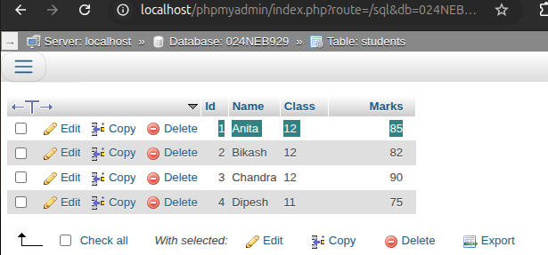
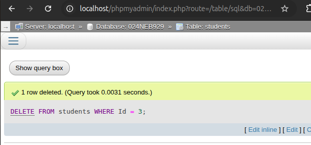
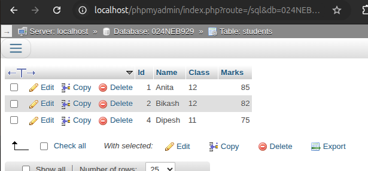

Overview of Database Management System
This chapter covers fundamental concepts of database management systems, including data organization, database models, normalization techniques, and practical SQL implementation.

1. What is Database and DBMS? Advantages and Disadvantages of DBMS
What is a Database?
A database is an organized collection of related data that can be easily accessed, managed, and updated. It stores data in structured formats such as tables.
What is a DBMS?
A Database Management System (DBMS) is software that interacts with users and applications to capture and analyze data, and manages the database. It allows creation, updating, querying, and administration of databases.
Advantages of DBMS:
- Reduced Data Redundancy: Minimizes duplicate data storage.
- Improved Data Sharing: Allows multiple users to access data concurrently.
- Data Integrity: Maintains accuracy and consistency of data.
- Security: Controls unauthorized access to sensitive data.
- Backup and Recovery: Supports data recovery in case of failure.
- Data Independence: Changes in database structure don’t affect applications.
Disadvantages of DBMS:
- Complexity: Requires skilled personnel for design and management.
- Cost: High initial investment in hardware and software.
- Performance Overhead: Additional processing may reduce speed.
- Single Point of Failure: System failure can halt operations.
Terminologies in Database
Some of the important terms used in database systems are:
- Table: A collection of related data organized in rows and columns.
- Field: A column in a table that stores specific information about each record.
- Record: A single row in a table containing related data items.
- Tuple: Another term for a record; an ordered set of values.
- Object: In object-oriented databases, it represents real-world entities with attributes and behaviors.
- Keys: Special fields used to uniquely identify records (e.g., Primary Key, Foreign Key).
Data Types
Data types define the kind of values that can be stored in a table field. Common examples include:
- Integer: Whole numbers (e.g., 1, 25, -10).
- Decimal/Float: Numbers with fractional parts (e.g., 3.14, -2.5).
- Character/String: Sequence of characters (e.g., "Hello", "Nepal").
- Date/Time: Represents dates and times (e.g., 2025-09-01, 15:30:00).
- Boolean: Logical values (TRUE/FALSE).
Data Dictionary
A Data Dictionary is a repository that contains information about the structure of the database. It stores metadata such as:
- Names of tables, fields, and relationships
- Data types of each field
- Constraints (e.g., NOT NULL, UNIQUE)
- Indexes and keys
It acts as a reference for database administrators and developers.
2. File Processing System vs DBMS
| Feature | File Processing System | DBMS |
|---|---|---|
| Data Redundancy | High; same data stored in multiple files | Low; integrated data storage |
| Data Consistency | Poor; hard to keep data consistent across files | High; enforced through constraints and rules |
| Data Sharing | Limited; data locked to specific applications | Efficient; multiple users and applications can share data |
| Data Integrity | Manual enforcement; prone to errors | Automatic integrity constraints (keys, rules) |
| Security | Basic or none | Robust access controls and security mechanisms |
3. Types of Database Models
Database models define the logical design and structure of a database. They specify how data is stored, related, and manipulated. The following are the most common types of database models:
1. Hierarchical Model
The hierarchical model organizes data into a tree-like structure, where each parent node can have multiple child nodes, but each child has only one parent. It is suitable for representing data with a clear hierarchy, such as organizational charts or file systems.
- Data is stored in records connected by parent–child relationships.
- Supports one-to-many relationships.
- Navigation is fast but rigid, as relationships are predefined.

2. Network Model
The network model represents data using nodes and set structures. Unlike the hierarchical model, a child (called a member) can have multiple parents, supporting many-to-many relationships. This model is more flexible for complex applications.
- Data is organized as records connected by links (pointers).
- Supports many-to-many relationships.
- Efficient for complex queries but harder to design and maintain.

3. Relational Model
The relational model organizes data into tables (relations) made of rows (tuples) and columns (attributes). Relationships between tables are established using keys. This is the most widely used model in modern database systems.
- Data is stored in two-dimensional tables.
- Supports powerful querying using SQL.
- Offers flexibility, simplicity, and scalability.

4. Entity-Relational Model (ER Model)
The Entity-Relational (ER) model represents the database in terms of entities, attributes, and relationships. It is often used at the design stage to model real-world concepts before implementation in a relational database.
- Entities represent real-world objects (e.g., Student, Course).
- Attributes describe properties of entities (e.g., Name, Age).
- Relationships define associations between entities (e.g., Enrolled-In).

4. What is a Relational Database? How is it Different?
A relational database stores data in tables (relations) with rows (tuples) and columns (attributes). Each table has a primary key to uniquely identify rows.
Differences from other models:
- Uses tabular format vs tree or graph structures.
- Supports powerful query language (SQL).
- Provides data independence and easy schema modification.
- Widely adopted due to simplicity and flexibility.
5. What is Data Redundancy? How Does DBMS Help Reduce It?
Data redundancy means the same piece of data is stored unnecessarily in multiple places. This causes inconsistency, increased storage, and maintenance issues.
How DBMS reduces redundancy:
- Stores data centrally in a single database.
- Uses normalization to organize data efficiently.
- Controls data access and updates through integrity constraints.
- Eliminates duplicate data entries across tables.
6. Centralized vs Distributed Database Systems
| Feature | Centralized Database | Distributed Database |
|---|---|---|
| Data Location | Stored at a single central location | Stored across multiple physical locations |
| Management | Managed from one site | Multiple sites manage their portions |
| Advantages | Easy to manage, consistent data | Improved reliability, availability, and performance |
| Disadvantages | Single point of failure; slower access for remote users | Complex management and synchronization |
7. Database Administrator (DBA) and Responsibilities
Database Administrator (DBA) is the person responsible for managing and maintaining the DBMS environment.
Major Responsibilities:
- Installing and upgrading DBMS software.
- Designing and implementing database schemas.
- Ensuring data security and access control.
- Monitoring database performance and tuning.
- Backup and recovery management.
- Managing user accounts and permissions.
- Troubleshooting database issues.
Integrity Constraints and Their Types
Integrity constraints are the rules that ensure the accuracy, validity, and consistency of data in a database. They act as a safeguard to prevent invalid or inconsistent data from being entered or maintained in the system. Without integrity constraints, databases would quickly become unreliable, as users could insert contradictory or incomplete information. These rules are enforced by the DBMS automatically whenever data is inserted, updated, or deleted.
In essence, integrity constraints maintain the quality of the data and preserve the logical relationships between tables. They are one of the key reasons why databases are more reliable than traditional file systems.
Types of Integrity Constraints
1. Domain Integrity Constraint
Domain constraints define the valid set of values for an attribute (column). They restrict the type, format, and permissible range of values that can be stored in a column.
For example, the column Age should only accept positive integers, and the column Email should follow the email format.
- Specifies the data type (e.g., integer, char, date).
- Restricts the range (e.g., marks between 0 and 100).
- Ensures values are meaningful and within expected bounds.
CREATE TABLE Students (
StudentID INT PRIMARY KEY,
Name VARCHAR(50) NOT NULL,
Age INT CHECK (Age > 0 AND Age < 120)
);
Here, the domain constraint ensures that Age must always be between 1 and 119.
2. Entity Integrity Constraint
Entity integrity ensures that every table has a unique identifier (primary key) and that this key value is never NULL. It guarantees that each record (row) can be uniquely identified within the table. Without this, it would be impossible to distinguish between two rows of data.
- Each table must have a primary key.
- The primary key column(s) cannot contain
NULL. - No two rows can have the same primary key value.
CREATE TABLE Employees (
EmpID INT PRIMARY KEY,
Name VARCHAR(50),
Department VARCHAR(50)
);
The primary key EmpID ensures every employee record is unique and identifiable.
3. Referential Integrity Constraint
Referential integrity maintains consistency between related tables through the use of foreign keys.
It ensures that a value in a child table must correspond to an existing value in the parent table or be NULL (if allowed).
This prevents the creation of "orphan" records.
- Defined using foreign keys.
- Ensures that relationships between tables remain valid.
- Prevents deletion of a parent record if matching child records exist (unless cascading is defined).
CREATE TABLE Departments (
DeptID INT PRIMARY KEY,
DeptName VARCHAR(50)
);
CREATE TABLE Employees (
EmpID INT PRIMARY KEY,
Name VARCHAR(50),
DeptID INT,
FOREIGN KEY (DeptID) REFERENCES Departments(DeptID)
);
Here, every employee must be assigned to a valid department. If DeptID = 5 does not exist in Departments, it cannot be inserted into Employees.
4. Key Integrity Constraint
Key constraints enforce the uniqueness and proper identification of rows within a table. They define which attribute(s) can be used as keys and how they enforce uniqueness across records.
- Primary Key: Uniquely identifies each record, not NULL.
- Unique Key: Ensures uniqueness of values but allows one NULL.
- Candidate Key: A set of attributes that can uniquely identify records. One is chosen as the primary key.
- Foreign Key: Links one table to another, ensuring referential integrity.
CREATE TABLE Users (
UserID INT PRIMARY KEY,
Username VARCHAR(50) UNIQUE,
Email VARCHAR(100) UNIQUE
);
Here, UserID is the primary key, while Username and Email must be unique for each user.
Why Integrity Constraints Matter?
Integrity constraints form the backbone of reliable databases:
- Prevent invalid, inconsistent, and duplicate data.
- Ensure logical correctness of relationships between tables.
- Protect data from accidental corruption during insert, update, or delete operations.
- Maintain trust in the database for decision-making and operations.
8. Normalization: Definition and Normal Forms
Normalization is the process of organizing data in a database to reduce redundancy and improve data integrity.
First Normal Form (1NF):
Table is in 1NF if all columns contain atomic (indivisible) values, and there are no repeating groups.
Example:
StudentID | Name | Subjects
--------------------------------
1 | Alice | Math, Physics
2 | Bob | Chemistry
Here, Subjects is not atomic. To convert to 1NF:
StudentID | Name | Subject
---------------------------
1 | Alice | Math
1 | Alice | Physics
2 | Bob | Chemistry
Second Normal Form (2NF):
Table is in 2NF if it is in 1NF and every non-key attribute is fully functionally dependent on the entire primary key (no partial dependency).
Example:
StudentID | CourseID | CourseName | Grade
-----------------------------------------
1 | C1 | Math | A
1 | C2 | Physics | B
If CourseName depends only on CourseID, not on the full composite key (StudentID, CourseID), separate into two tables:
Courses:
CourseID | CourseName
---------------------
C1 | Math
C2 | Physics
Grades:
StudentID | CourseID | Grade
----------------------------
1 | C1 | A
1 | C2 | B
Third Normal Form (3NF):
Table is in 3NF if it is in 2NF and all attributes are only dependent on the primary key (no transitive dependency).
Example:
StudentID | AdvisorID | AdvisorName
-----------------------------------
1 | 10 | Dr. Smith
2 | 11 | Dr. Jones
AdvisorName depends on AdvisorID, not StudentID. To convert:
Students:
StudentID | AdvisorID
---------------------
1 | 10
2 | 11
Advisors:
AdvisorID | AdvisorName
-----------------------
10 | Dr. Smith
11 | Dr. Jones
Advantages and Disadvantages of Normalization
Normalization is the process of organizing data in a database to reduce redundancy and improve data integrity. It involves dividing large, complex tables into smaller, well-structured tables connected through relationships. While normalization improves efficiency and accuracy, it also comes with certain trade-offs. Understanding its pros and cons is essential for designing an effective database.
Advantages of Normalization
- Reduces Data Redundancy: Prevents the storage of the same piece of information in multiple places, saving space and ensuring consistency.
- Improves Data Integrity: Changes made in one place are automatically reflected everywhere, minimizing anomalies during updates, insertions, or deletions.
- Easier Maintenance: With smaller, organized tables, modifying, updating, or extending the database is simpler and less error-prone.
- Better Data Consistency: Since each fact is stored only once, data remains consistent across the database.
- Efficient Query Processing: Properly normalized databases often perform faster in read/write operations because there is less redundant data to scan.
- Logical Clarity: Relationships between entities become clear, improving database design and understanding for developers and analysts.
Disadvantages of Normalization
- Complex Queries: Since data is spread across multiple tables, retrieving information often requires complex joins, making queries harder to write and slower in some cases.
- Performance Overhead: Too much normalization can slow down query performance, especially in large databases, due to frequent table joins.
- Initial Design Complexity: Designing a highly normalized database requires deep understanding of entities, relationships, and dependencies, which can be time-consuming.
- Difficult for Beginners: For new learners or non-technical users, normalized designs may appear complicated compared to flat, single tables.
- Not Always Suitable: In analytical databases or systems where speed is more important than consistency (like data warehouses), excessive normalization can be a drawback.
Conclusion
Normalization is a powerful technique for ensuring data accuracy and reducing redundancy, making it an essential step in designing reliable transactional databases. However, it should be applied wisely, balancing between data consistency and system performance. In practice, databases often use partial normalization (up to 3NF or BCNF) while denormalizing selectively for performance optimization.
9. Keys in DBMS
Primary Key
A unique identifier for each record in a table. It cannot be null.
Example: StudentID in a Student table.
Foreign Key
An attribute that creates a link between two tables by referring to the primary key in another table.
Example: AdvisorID in the Student table referring to AdvisorID in Advisors table.
Candidate Key
Attributes that can uniquely identify a record. One candidate key is chosen as the primary key.
Example: Both StudentID and Email could be candidate keys, but StudentID is chosen as primary key.
10. What is SQL? Components and Common Functions
SQL (Structured Query Language) is a standard programming language used to manage and manipulate relational databases.
Components of SQL:
- DDL (Data Definition Language): Commands like CREATE, ALTER, DROP used to define database structure.
- DML (Data Manipulation Language): Commands like SELECT, INSERT, UPDATE, DELETE used to manipulate data.
- DCL (Data Control Language): Commands like GRANT, REVOKE used for permissions and access control.
- TCL (Transaction Control Language): Commands like COMMIT, ROLLBACK used to manage transactions.
Common SQL Functions:
- Aggregate Functions: COUNT(), SUM(), AVG(), MAX(), MIN()
- String Functions: CONCAT(), SUBSTRING(), LENGTH(), UPPER(), LOWER()
- Date Functions: NOW(), CURDATE(), DATEADD(), DATEDIFF()
- Numeric Functions: ROUND(), FLOOR(), CEIL()
Data and Information
- Data: Raw facts and figures without any meaning
- Information: Processed data that is meaningful and useful
- Features of Information: Accurate, timely, relevant, complete, consistent, reliable
- Database: Organized collection of related data
- Purpose of Database: To store, retrieve, manage, and manipulate data efficiently
Terminologies in Database
- Table: Collection of related data organized in rows and columns
- Field: Single piece of information about an entity (column)
- Record: Complete set of fields about one entity (row)
- Tuple: Another term for a record in relational databases
- Object: In object-oriented databases, an instance of a class
- Keys: Attributes used to identify records uniquely (Primary, Foreign, Candidate, etc.)
- Data Dictionary: Metadata repository describing database structure
Database Management System (DBMS)
- Introduction: Software system for creating, managing, and controlling databases
- Objectives:
- Data integrity and security
- Efficient data access
- Concurrent access control
- Data independence
- Advantages:
- Reduced data redundancy
- Improved data consistency
- Better data security
- Efficient data sharing
- Disadvantages:
- Complexity in design
- Higher costs
- Performance overhead
- Vulnerability to failures

Types of Database Models
- Hierarchical: Tree-like structure with parent-child relationships
- Network: Graph structure allowing multiple parent-child relationships
- Relational: Data organized in tables with relationships between them
- Entity-Relational: Conceptual model representing entities and their relationships
Integrity Constraints
- Domain: Values must be from a defined domain
- Entity: Primary key cannot be null
- Referential: Foreign key must match a primary key in another table
- Keys: Primary, foreign, candidate, super, alternate keys
Normalization
- Introduction: Process of organizing data to minimize redundancy
- Normal Forms:
- 1NF: Atomic values, no repeating groups
- 2NF: In 1NF + no partial dependency
- 3NF: In 2NF + no transitive dependency
- Advantages: Reduced redundancy, improved integrity
- Disadvantages: More tables, complex queries
Centralized vs Distributed Database
| Feature | Centralized | Distributed |
|---|---|---|
| Data Location | Single location | Multiple locations |
| Advantages | Easy to manage, consistent | Faster access, fault-tolerant |
| Disadvantages | Single point of failure | Complex to manage |
Database Security
- Introduction: Protection of database from unauthorized access
- Challenges: Data breaches, SQL injection, privilege abuse
- Security Measures: Authentication, authorization, encryption, auditing
- Roles of DBA: Install/upgrade DBMS, manage security, backup/recovery
Practical Topics: DDL and DML
- DDL (Data Definition Language): CREATE, ALTER, DROP, TRUNCATE
- DML (Data Manipulation Language): SELECT, INSERT, UPDATE, DELETE
SQL Data Types
| Data Type | Description |
|---|---|
| CHAR | Fixed-length character string |
| VARCHAR | Variable-length character string |
| BINARY | Fixed-length binary data |
| VARBINARY | Variable-length binary data |
| TINYBLOB | Very small BLOB (binary large object) |
| TINYTEXT | Very small text string |
| TEXT | Text string |
| LONGTEXT | Large text string |
| ENUM | String with one value from predefined list |
| BIT | Bit-field type |
| TINYINT | Very small integer |
| BOOLEAN | True or false values |
| INTEGER | Standard integer |
| FLOAT | Single-precision floating-point |
| DOUBLE | Double-precision floating-point |
| DECIMAL | Fixed-point number |
| DATE | Date value (YYYY-MM-DD) |
| DATETIME | Date and time combination |
11. Structured Query Language (SQL)
Structured Query Language (SQL) is a standardized programming language used to manage and manipulate relational databases. It is essential for defining database structures, storing and retrieving data, and controlling access to that data. SQL is supported by all major relational database management systems (RDBMS), including MySQL, PostgreSQL, Oracle, Microsoft SQL Server, and SQLite.
Key Features of SQL:
- Standardized: SQL is governed by ANSI and ISO standards, ensuring consistent functionality across different systems.
- Declarative: SQL focuses on *what* operation to perform, rather than *how* it is executed. The database engine handles execution details.
- Powerful and Flexible: SQL can handle complex queries involving multiple tables, joins, filtering, sorting, grouping, and aggregations.
- Widely Used: SQL is the foundational language for data analysis, web development, enterprise software, and reporting systems.
Major Components of SQL:
- DDL (Data Definition Language): Used to define and manage database schemas. Common commands include:
CREATE– Create a new table, view, or index.ALTER– Modify an existing database object.DROP– Delete a table or object.TRUNCATE– Remove all records from a table without logging each deletion.
- DML (Data Manipulation Language): Used for managing data inside tables. Core commands include:
SELECT– Retrieve data from one or more tables.INSERT– Add new records.UPDATE– Modify existing data.DELETE– Remove records from a table.
- DCL (Data Control Language): Used to manage access permissions:
GRANT– Give privileges to users.REVOKE– Remove privileges from users.
- TCL (Transaction Control Language): Used to manage changes made by DML statements and group them into logical transactions:
COMMIT– Save the transaction permanently.ROLLBACK– Undo changes in the current transaction.SAVEPOINT– Set a point within a transaction to which you can later roll back.
Importance of SQL:
- SQL is a foundational tool for database administration, backend development, and data science.
- It supports automation, reporting, analytics, and system integration.
- Understanding SQL is critical for working with structured data efficiently and accurately.
SQL Commands to Perform Operations
-
a. Create a table named
studentswith fields:Id,Name,Class, andMarks.
CREATE TABLE students ( Id INT PRIMARY KEY, Name VARCHAR(50), Class VARCHAR(10), Marks INT );
Output:
  -
b. Insert records into the
studentstable.
INSERT INTO students (Id, Name, Class, Marks) VALUES (1, 'Anita', '12', 78), (2, 'Bikash', '12', 82), (3, 'Chandra', '12', 90), (4, 'Dipesh', '11', 75);
Output:
  -
c. Display all records from the
studentstable.
SELECT * FROM students;
Output:
 -
d. Update the marks of the student whose name is 'Anita' to 85.
UPDATE students SET Marks = 85 WHERE Name = 'Anita';
Output:
  -
e. Delete the record of the student with id = 3.
DELETE FROM students WHERE Id = 3;
Output:
 
Key Terms and Definitions
SELECT, INSERT, UPDATE, and DELETE. These operations empower users to retrieve, add, modify, or remove records while preserving the underlying table structure.
CREATE, ALTER, DROP, and TRUNCATE. These commands define tables, indexes, views, and schemas, forming the blueprint of the database system.
Learning Outcomes
- Understand fundamental database concepts and terminologies
- Explain different database models and their characteristics
- Apply normalization techniques to database design
- Compare centralized and distributed database systems
- Implement basic database security measures
- Use SQL data types appropriately in database design
Frequently Asked Questions (FAQs)
Data refers to raw, unprocessed facts and figures without context or meaning, such as numbers, characters, or symbols collected from various sources. Information is the processed, organized, and meaningful interpretation of data, which helps users make decisions and understand the context. In essence, information is data that has been given relevance and purpose.
A Database Management System (DBMS) provides numerous advantages including:
- Reduced Data Redundancy: Minimizes duplicate data storage by centralizing data management.
- Improved Data Consistency: Ensures that all users access the same up-to-date data, preventing discrepancies.
- Enhanced Security: Implements access controls and permissions to protect sensitive data from unauthorized users.
- Efficient Data Sharing: Enables multiple users and applications to access and manipulate data concurrently without conflicts.
- Backup and Recovery: Provides mechanisms for data backup and recovery to protect against data loss.
Normalization is a systematic process in database design used to organize data to minimize redundancy and dependency. It involves dividing large tables into smaller, related tables and defining relationships between them, ensuring that each piece of data is stored only once. This process helps maintain data integrity and improves database efficiency by reducing update anomalies.
A Database Administrator (DBA) is responsible for the installation, configuration, and maintenance of the database environment. Key roles include ensuring data security, managing user access, performing backup and recovery operations, optimizing database performance, and troubleshooting issues. The DBA acts as the guardian of the data, ensuring it is accurate, available, and secure for all users and applications.